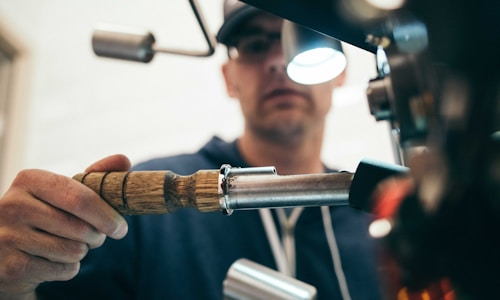

空运服务
快速、安全、可靠的全球空运解决方案

专业空运服务
Bio-Chain提供全球空运解决方案，依托我们的国际网络，确保进出口和跨境贸易业务的顺畅协调。作为认证的IATA代理，我们完全符合国际航空运输协会的规定。
我们的团队为危险品（DGR）提供定制支持，从监管建议和合规包装到专业航空运输。无论您是在运输时效性货物还是处理复杂的贸易路线，我们都提供可靠、安全、高效的空运物流服务。
我们专门处理需要专业监督的跨境快递和敏感货物运输，确保您的生物制品及药品能够安全、快速地到达目的地。
空运服务优势
时效性：空运是最快的国际运输方式，适合时间敏感的货物，确保您的生物制品在最短时间内到达目的地。
安全性：采用专业的包装和防护措施，配合实时监控系统，确保货物在运输过程中的安全。
温控能力：配备先进的温控设备，支持2-8°C、-20°C、-80°C等多种温度要求，满足各类生物制品的特殊需求。
全球网络：覆盖全球200多个国家和地区的航线网络，确保货物能够到达任何目的地。

空运服务类型
标准空运：适合一般货物的常规空运服务，提供可靠的运输保障和合理的价格。
快递空运：提供最快的空运服务，适合紧急货物，通常24-48小时内到达。
温控空运：专门为温度敏感货物设计的空运服务，配备温控设备和实时监控。
危险品空运：具备IATA危险品运输资质，安全运输各类危险品和受管制货物。
超大件空运：处理超重、超大货物的特殊空运服务，需要特殊设备和安排。
空运服务流程
1. 货物接收
专业团队接收货物，进行初步检查和分类，确保货物符合空运要求。
2. 专业包装
根据货物特性进行专业包装，包括温控包装、防震包装等，确保运输安全。
3. 文件处理
处理所有必要的运输文件，包括运单、清关文件、保险单据等。
4. 空运安排
安排合适的航班，确保货物按时起飞，实时跟踪运输状态。
5. 清关服务
协助办理目的地清关手续，确保货物顺利通关。
6. 最终配送
安排最后一公里配送，确保货物安全到达最终目的地。